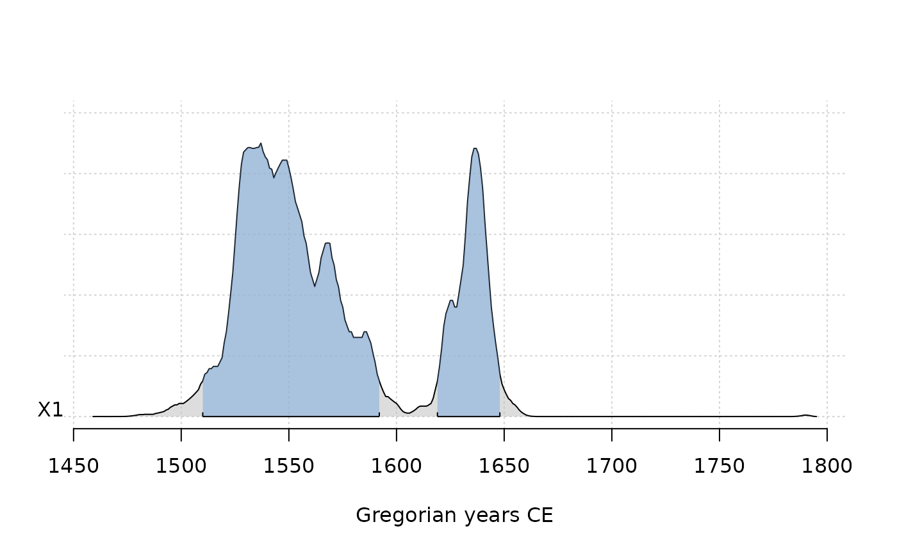
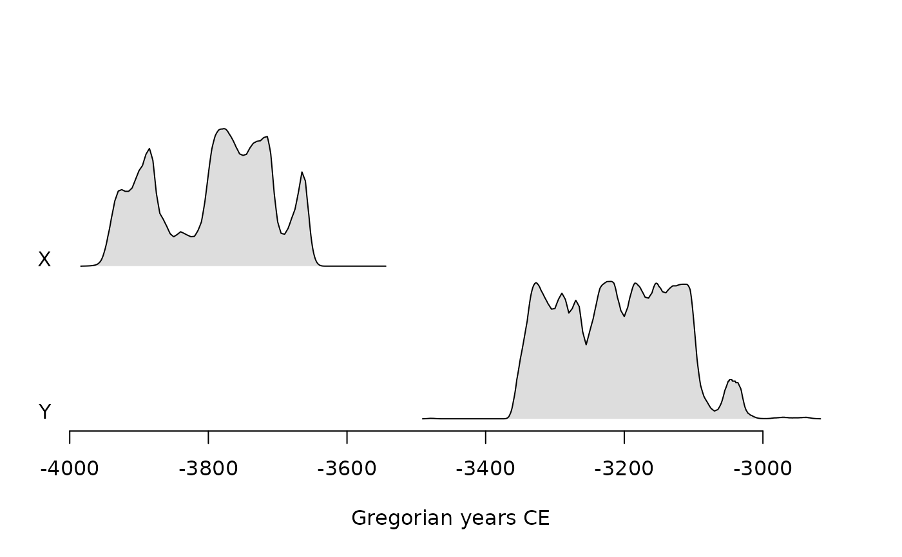
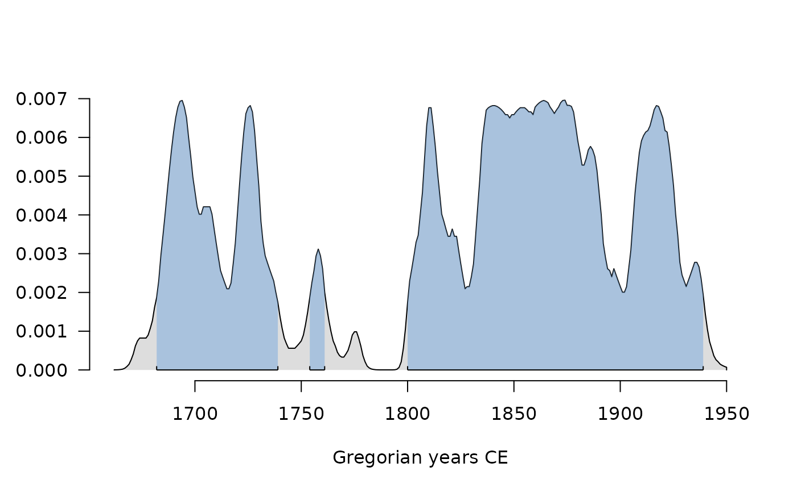

Calibrates radiocarbon dates.
Usage
c14_calibrate(values, errors, ...)
# S4 method for numeric,numeric
c14_calibrate(
values,
errors,
names = NULL,
curves = "intcal20",
reservoir_offsets = 0,
reservoir_errors = 0,
from = 55000,
to = 0,
resolution = 1,
normalize = TRUE,
F14C = FALSE,
drop = TRUE,
eps = 1e-06
)Arguments
- values
A
numericvector giving the BP ages or F14C values to be calibrated.- errors
A
numericvector giving the standard deviation of the values to be calibrated.- ...
Currently not used.
- names
A
charactervector specifying the names of the samples (e.g. laboratory codes).- curves
A
charactervector specifying the calibration curve to be used. Different curves can be specified per sample.- reservoir_offsets
A
numericvector giving the offset values for any marine reservoir effect (defaults to 0; i.e. no offset).- reservoir_errors
A
numericvector giving the offset value errors for any marine reservoir effect (defaults to 0; i.e. no offset).- from
length-one
numericvector specifying the earliest data to calibrate for, in cal. BP years.- to
A length-one
numericvector specifying the latest data to calibrate for, in cal. BP years.- resolution
A length-one
numericvector specifying the temporal resolution (in years) of the calibration.- normalize
A
logicalscalar: should the calibration be normalized?- F14C
A
logicalscalar: should the calibration be carried out in F14C space? IfTRUE,valuesmust be expressed as F14C.- drop
A
logicalscalar: should years with zero probability be discarded? IfTRUE(the default), results in a narrower time range.- eps
A length-one
numericvalue giving the cutoff below which calibration values will be removed.
Value
A CalibratedAges object.
Note
Adapted from Bchron::BchronCalibrate() by Andrew Parnell and
rcarbon::calibrate() by Andrew Bevan and Enrico Crema.
References
Bronk Ramsey, C. (2008). Radiocarbon Dating: Revolutions in Understanding. Archaeometry, 50:249-275. doi:10.1111/j.1475-4754.2008.00394.x .
See also
Other radiocarbon tools:
F14C,
c14_combine(),
c14_curve(),
c14_ensemble(),
c14_plot,
c14_spd(),
c14_uncalibrate(),
rec_plot
Examples
## Calibrate a single date
cal <- c14_calibrate(300, 20)
plot(cal, panel.first = graphics::grid())

## Calibrate multiple dates
cal <- c14_calibrate(
values = c(5000, 4500),
errors = c(45, 35),
names = c("X", "Y")
)
plot(cal, calendar = BP(), panel.first = graphics::grid())
 plot(cal, interval = FALSE)
plot(cal, interval = FALSE)

plot(cal[, 1, ], col.interval = "red")
plot(cal, density = FALSE, level = 0.68, lwd = 5)
 plot(cal, density = FALSE, level = 0.95, lwd = 5)
# \donttest{
## Out of 14C range?
out <- c14_calibrate(130, 20)
#> Warning: Date “X1” may extent out of range.
plot(out)
#> Warning: Date “X1” may extent out of range.
plot(cal, density = FALSE, level = 0.95, lwd = 5)
# \donttest{
## Out of 14C range?
out <- c14_calibrate(130, 20)
#> Warning: Date “X1” may extent out of range.
plot(out)
#> Warning: Date “X1” may extent out of range.

# }